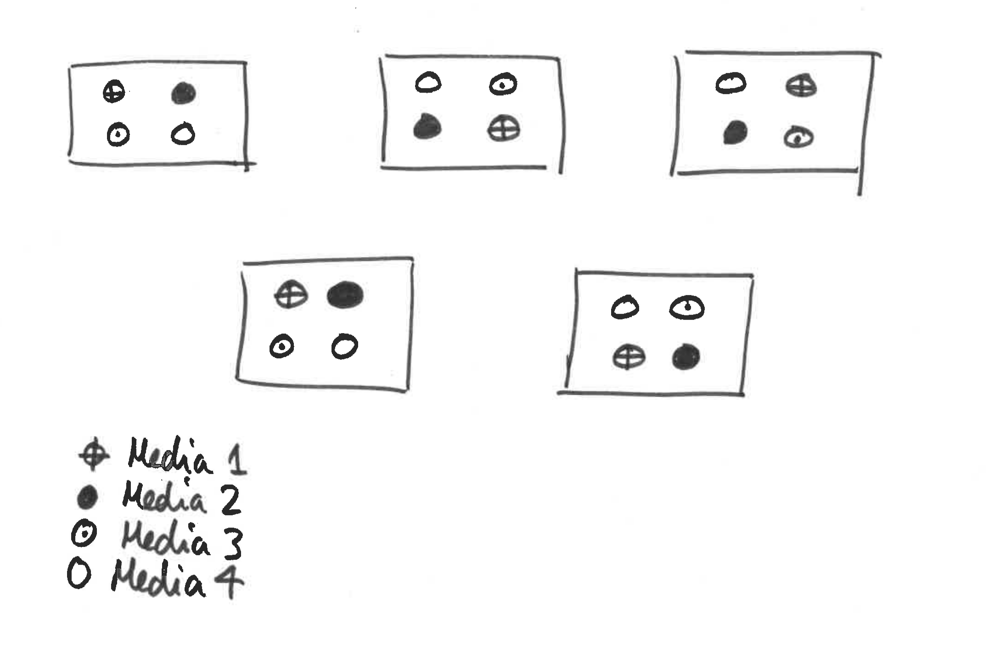

8 Worked Example 4
A microbiologist wishes to know which of four growth media is best for rearing large populations of anthrax, quickly. However, this poorly funded scientist does not own a large enough incubator in which to grow lots of replicate populations. Instead he requests space in five different incubators owned by other, better-funded researchers. Each incubator just has space for four bottles of medium. Our scientist allocates each growth medium to one bottle per incubator at random, inoculates with anthrax then monitors population growth rate.

The data are available here:
bacteria <- readRDS("bacteria.rds")Can you produce a suitable linear mixed model analysis for this data, to answer the question “Which of four growth media is best for rearing large populations of anthrax?”